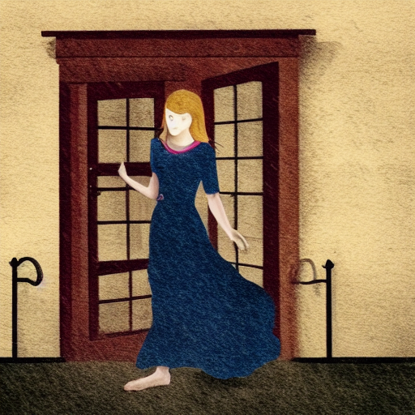
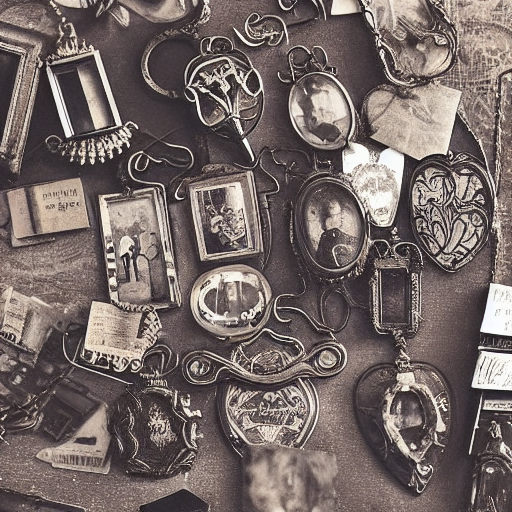
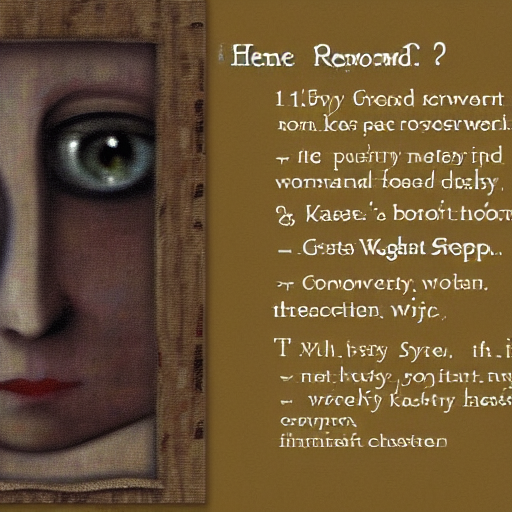
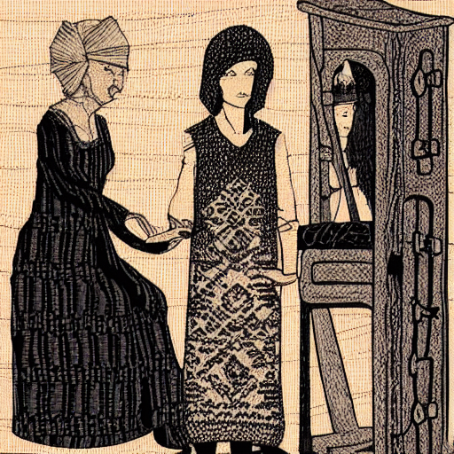
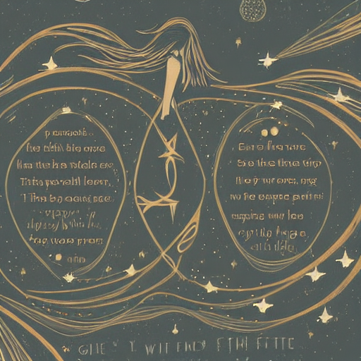

In a small, seaside town, where the salty air filled lungs and the sound of seagulls filled ears, a mysterious shop stood out among the quaint, old buildings. The sign above the door read "Curios and Wonders," and it was shrouded in an aura of secrecy. The shop's interior was a labyrinth of narrow aisles and dimly lit corners, filled with an assortment of peculiar items that seemed to defy explanation. Dusty vases overflowed with forgotten flowers, while vintage clocks ticked away with a slow, mournful rhythm, as if waiting for the return of a long-lost love.
As visitors wandered through the shop, they began to notice a recurring theme: objects imbued with a sense of longing. A dusty, old pocket watch seemed to yearn for the touch of its owner's hand, while a faded photograph of a forgotten love smiled wistfully into the void. The Collector watched these reactions with an intensity that bordered on curiosity, her eyes narrowing as she searched for the next piece to add to her collection. Each object told a story of love, loss, and regret, and the Collector's gaze seemed to hold a deep understanding of the human heart.
One stormy evening, a young woman named Sophia stumbled into the shop, seeking refuge from the torrential rain. As she pushed open the creaky door, a bell above it let out a soft tinkle, and the Collector looked up from behind the counter, her eyes locking onto Sophia's like a magnet. The air inside the shop was heavy with the scent of old books and damp earth, and Sophia felt an inexplicable pull towards the Collector, as if their fates were somehow intertwined. The storm raged on outside, but inside, a different kind of tempest was brewing.

As Sophia ventured deeper into the shop, she began to notice that each object seemed to be connected to her own life story, like pieces of a puzzle being slowly revealed. A vintage locket on a nearby shelf glinted in the dim light, its surface etched with a single, familiar name: her own. The Collector's eyes sparkled with a knowing glint as Sophia's fingers itched to touch the locket, as if an unseen thread was drawing her closer. The air vibrated with an otherworldly energy, and Sophia felt the weight of forgotten memories stirring within her.

The Collector's hand extended, her fingers closing around the locket with a gentle yet firm touch. As her skin made contact, the locket sprang open, releasing a whisper of forgotten scents and forgotten dreams. Sophia's memories began to resurface, like a tide of emotions rising from the depths of her soul. She recalled laughter and tears, love and loss, and the Collector's eyes seemed to echo each emotion, as if she had lived a thousand lives before. The shop around them dissolved, leaving only the two women, suspended in a world of their own making.
As Sophia's memories swirled around her, the Collector's eyes seemed to hold a deep understanding of the human heart. The air was charged with a sense of possibility, as if the very fabric of reality was about to unravel. The shop's objects, once mere trinkets, now pulsed with a life of their own, their stories intertwining with Sophia's like the threads of a tapestry. The Collector's voice whispered a single word, a single phrase that echoed through the chambers of Sophia's mind: "Remember." And with that, the past and present blurred, becoming one, indistinguishable, yet utterly clear.
The Collector's eyes locked onto Sophia's, and in that moment, the boundaries between past and present, between reality and fantasy, dissolved. They were two women, connected by a thread of shared experience, their lives intertwined like the pages of a book. The storm outside receded, and an eerie silence fell over the shop, as if the very air was holding its breath. The objects, the memories, the emotions – all of it coalesced into a single, crystalline moment, where the past and present merged, and Sophia's true self was revealed, shining like a beacon in the darkness.
The Collector's gaze was no longer a collector's gaze, but a mirror's gaze, reflecting Sophia's very soul. In this instant, Sophia understood the nature of her existence: a thread in the vast tapestry of human experience, woven from the threads of countless lives. The Collector, it seemed, was not just a collector, but a guardian, a weaver, and a keeper of the forgotten stories that bound them all together. And as Sophia's eyes met the Collector's, she knew that she had finally found a home, a place where her own story would be cherished, and remembered.

The Collector's eyes held a secret, a message encoded in the depths of her gaze. Sophia felt the weight of it, like a key turning in a lock, unlocking a door to a new understanding. The Collector's hands, once mere collectors of objects, now held the threads of Sophia's own life, weaving them into a new narrative. The past and present merged, becoming a single, shimmering fabric, as Sophia's eyes locked onto the Collector's, and in that moment, the future unfolded, like a map leading to a destination yet unknown, and yet, already, impossibly familiar.

As the moment dissolved, Sophia felt the world shift around her, like the gentle lapping of waves on a distant shore. The Collector's eyes, once pools of mystery, now shone like stars on a clear night. Sophia's heart, once a stranger to her own emotions, now overflowed with a sense of belonging. She knew that she had been given a gift: the gift of a life unfulfilled, a life that could be rewritten at any moment. And with that, Sophia stepped forward, into the light, leaving the Collector's shop, and her own story, forever entwined.
